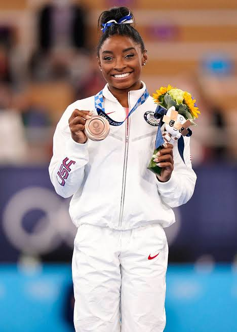

Simone Biles is an American artistic gymnast who is widely regarded as the greatest gymnast of all time.
Simone was born on March 14, 1997, in Columbus, Ohio, and was raised by her grandparents in Spring, Texas. She discovered gymnastics at age six during a daycare field trip, and coaches quickly noticed her talent. She went on to win four gold medals at the 2016 Rio Olympics. At the Tokyo Olympics, she withdrew from several events to protect her mental and physical safety, a decision that started a worldwide conversation about athletes’ mental health. She returned at the 2024 Paris Olympics and won three more gold medals, including the all-around title. With 11 Olympic medals and 30 World Championship medals, she is the most decorated gymnast in history, and several skills are named after her.
“Put mental health first because if you don’t, then you’re not going to enjoy your sport and you’re not going to succeed as much as you want to.”
Simone has inspired me a lot, especially as someone who did gymnastics when I was younger. I watched her do things no one had ever done before, and it showed me how far hard work and dedication can take you. What I admire most, though, is her courage in putting her mental health first, even when the whole world was watching. She taught me that being strong does not mean ignoring your limits. It means knowing when to take care of yourself so you can come back even better. That lesson guides how I approach both my studies and my life.
A large language model (LLM) is a type of artificial intelligence trained on huge amounts of text so that it can understand and generate human-like language. Students can use LLMs in two very different ways. A crutch does the thinking for you, while a tool helps you think. LLMs are valuable for students only when the student remains the one doing the learning.
Research shows what happens when that line is crossed. Bastani et al. (2024) gave close to a thousand high school math students access to AI tutors, comparing a plain ChatGPT-style version with a version designed to protect learning by giving hints instead of answers. During practice, students using the plain version performed 48% better than students without AI. However, when the AI was taken away for the exam, those same students scored 17% worse than the group that never had it. The researchers concluded that without guardrails, students lean on the AI as a crutch during practice and then struggle on their own. This matters because AI can hide a student’s real level of understanding. Their assignments and practice work may look strong, while their actual knowledge stays weak until a test exposes it.
Used well, however, an LLM is a powerful tool. Good uses include having it explain a concept in simpler terms, helping debug code after I have already tried to fix it myself, and quizzing me on material before a test. Personally, I prompt it to guide me step by step instead of giving me the answer, especially when I need a quick explanation during class. The difference is mindset. Some students treat AI as an easy way out, but in doing so they weaken the very skills they are in school to build.
The worst use is submitting work the AI wrote, and this is linked to what could be called a confidence trap. In a survey of 319 knowledge workers, Lee et al. (2025) found that higher confidence in generative AI was associated with less critical thinking, while higher confidence in one's own abilities was associated with more. In other words, the more you trust it blindly, the less you think. That is why it is important to build your own skills first, so you can judge whether the AI's output is actually correct.
My CIT2011 course's AI policy is a good real-world example of using AI as a tool. It guides students in the right direction by requiring them to document how they used AI and to properly reference their sources, so that the work submitted still reflects their own understanding.
In conclusion, the difference between a tool and a crutch comes down to who is doing the thinking. This connects to one of my top traits, being willing to do what others avoid. Letting an LLM do the work is the easy path, but doing the hard thinking yourself is what leads to real learning.